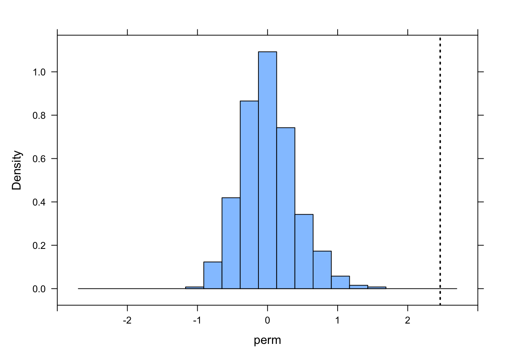
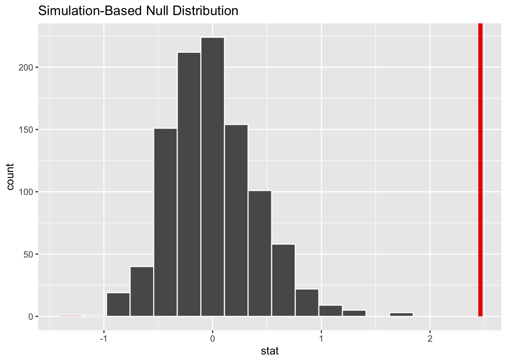
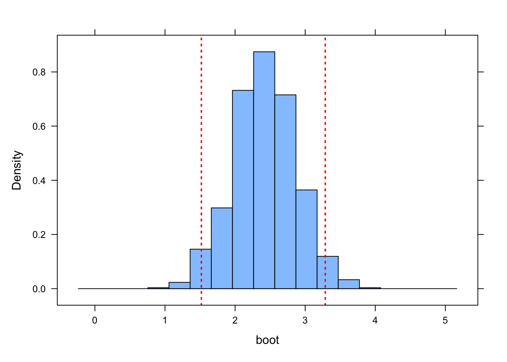
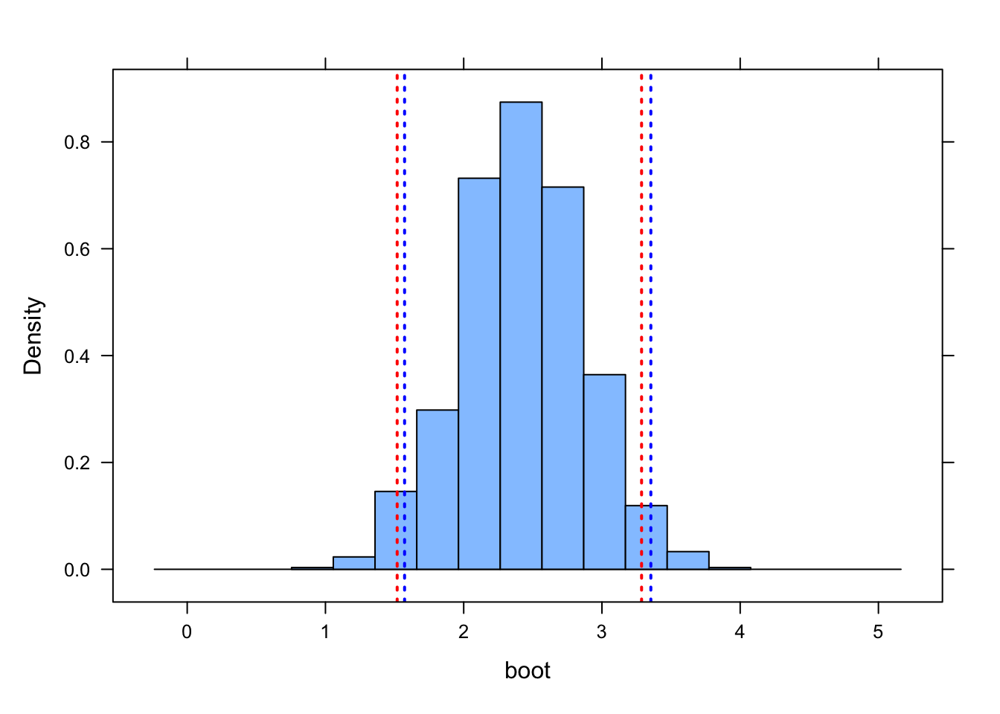
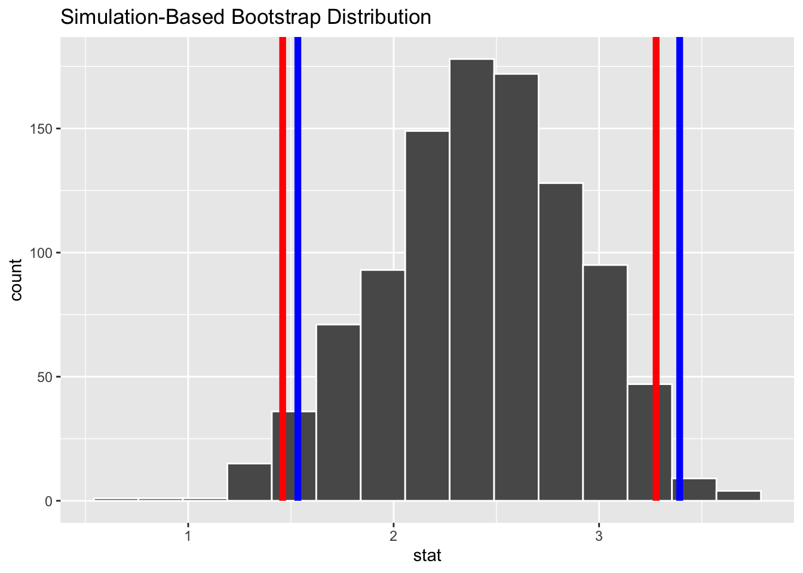

library(tidyverse)
library(broom)
f <- "https://raw.githubusercontent.com/difiore/ada-datasets/main/Street_et_al_2017.csv"
d <- read_csv(f, col_names = TRUE)Exercise 08 Solution
• Solution
Step 1
Using the {tidyverse} read_csv() function, load the “Street_et_al_2017.csv” dataset as a “tibble” named d.
Do a quick exploratory data analysis where you generate the five-number summary (median, minimum and maximum and 1st and 3rd quartile values), plus mean and standard deviation, for each quantitative variable.
library(skimr)
library(kableExtra)
skim(d) |>
kable() |>
kable_styling(font_size = 10, full_width = FALSE)| skim_type | skim_variable | n_missing | complete_rate | character.min | character.max | character.empty | character.n_unique | character.whitespace | numeric.mean | numeric.sd | numeric.p0 | numeric.p25 | numeric.p50 | numeric.p75 | numeric.p100 | numeric.hist |
|---|---|---|---|---|---|---|---|---|---|---|---|---|---|---|---|---|
| character | Species | 0 | 1.0000000 | 10 | 41 | 0 | 301 | 0 | NA | NA | NA | NA | NA | NA | NA | NA |
| character | Taxonomic_group | 0 | 1.0000000 | 10 | 12 | 0 | 3 | 0 | NA | NA | NA | NA | NA | NA | NA | NA |
| numeric | Social_learning | 98 | 0.6744186 | NA | NA | NA | NA | NA | 2.300493 | 16.51382 | 0.000 | 0.0000 | 0.000 | 0.0000 | 214.00 | ▇▁▁▁▁ |
| numeric | Research_effort | 115 | 0.6179402 | NA | NA | NA | NA | NA | 38.763441 | 80.58897 | 1.000 | 6.0000 | 16.000 | 37.7500 | 755.00 | ▇▁▁▁▁ |
| numeric | ECV | 117 | 0.6112957 | NA | NA | NA | NA | NA | 68.493206 | 82.84154 | 1.630 | 11.8250 | 58.550 | 86.1975 | 491.27 | ▇▁▁▁▁ |
| numeric | Group_size | 114 | 0.6212625 | NA | NA | NA | NA | NA | 13.263102 | 15.19637 | 1.000 | 3.1250 | 7.500 | 18.2250 | 91.20 | ▇▂▁▁▁ |
| numeric | Gestation | 161 | 0.4651163 | NA | NA | NA | NA | NA | 164.504000 | 37.99758 | 59.990 | 138.3525 | 166.030 | 183.2650 | 274.78 | ▁▅▇▃▁ |
| numeric | Weaning | 185 | 0.3853821 | NA | NA | NA | NA | NA | 311.088276 | 253.08157 | 40.000 | 121.6600 | 234.165 | 388.7825 | 1260.81 | ▇▃▁▁▁ |
| numeric | Longevity | 181 | 0.3986711 | NA | NA | NA | NA | NA | 331.971333 | 165.67434 | 103.000 | 216.0000 | 301.200 | 393.3000 | 1470.00 | ▇▂▁▁▁ |
| numeric | Sex_maturity | 194 | 0.3554817 | NA | NA | NA | NA | NA | 1480.228692 | 999.22681 | 283.180 | 701.5200 | 1427.170 | 1894.1100 | 5582.93 | ▇▆▂▁▁ |
| numeric | Body_mass | 63 | 0.7906977 | NA | NA | NA | NA | NA | 6795.184328 | 14229.82563 | 31.230 | 739.4425 | 3553.500 | 7465.0000 | 130000.00 | ▇▁▁▁▁ |
| numeric | Maternal_investment | 197 | 0.3455150 | NA | NA | NA | NA | NA | 478.640000 | 292.06808 | 99.990 | 255.8850 | 401.350 | 592.2175 | 1492.30 | ▇▅▂▁▁ |
| numeric | Repro_lifespan | 206 | 0.3156146 | NA | NA | NA | NA | NA | 9064.974702 | 4601.56798 | 2512.157 | 6126.2200 | 8325.890 | 10716.5950 | 39129.57 | ▇▃▁▁▁ |
detach(package:kableExtra)
detach(package:skimr)Step 2
From this dataset, plot brain size (ECV) as a function of social group size (Group_size), longevity (Longevity), juvenile period length (Weaning), and reproductive lifespan (Repro_lifespan).
library(cowplot)
p1 <- ggplot(data = d, aes(x = Group_size, y = ECV)) + geom_point()
p2 <- ggplot(data = d, aes(x = Longevity, y = ECV)) + geom_point()
p3 <- ggplot(data = d, aes(x = Weaning, y = ECV)) + geom_point()
p4 <- ggplot(data = d, aes(x = Repro_lifespan, y = ECV)) + geom_point()
plot_grid(p1, p2, p3, p4, nrow = 2)NOTE: It looks like most of these variables should probably be log transformed, though that is not essential for this exercise ;)
Step 3
Derive by hand the ordinary least squares regression coefficients \(\beta1\) and \(\beta0\) for ECV as a function of social group size.
d_mod <- d |>
filter(!is.na(ECV) & !is.na(Group_size))
# or
d_mod <- d |>
drop_na(ECV, Group_size)
(b1 <- cor(d_mod$ECV, d_mod$Group_size) * sd(d_mod$ECV)/sd(d_mod$Group_size))## [1] 2.463071(b0 <- mean(d_mod$ECV) - b1 * mean(d_mod$Group_size))## [1] 30.35652Step 4
Confirm that you get the same results using the lm() function.
m <- lm(ECV ~ Group_size, data = d_mod)
results <- m |>
summary() |>
tidy()
results## # A tibble: 2 × 5
## term estimate std.error statistic p.value
## <chr> <dbl> <dbl> <dbl> <dbl>
## 1 (Intercept) 30.4 6.80 4.47 1.56e- 5
## 2 Group_size 2.46 0.351 7.02 7.26e-11Step 5
Repeat the analysis above for three different major radiations of primates - “catarrhines”, “platyrrhines”, and “strepsirhines”) separately. Do your regression coefficients differ among groups? How might you determine this?
platyrrhini <- d_mod |>
filter(Taxonomic_group == "Platyrrhini")
catarrhini <- d_mod |>
filter(Taxonomic_group == "Catarrhini")
strepsirhini <- d_mod |>
filter(Taxonomic_group == "Strepsirhini")
(platyrrhini_results <- lm(ECV ~ Group_size, data = platyrrhini) |>
summary() |>
tidy())## # A tibble: 2 × 5
## term estimate std.error statistic p.value
## <chr> <dbl> <dbl> <dbl> <dbl>
## 1 (Intercept) 16.2 7.39 2.19 0.0356
## 2 Group_size 1.97 0.455 4.32 0.000136# or
(beta1_p <- cov(platyrrhini$ECV, platyrrhini$Group_size)/var(platyrrhini$Group_size))## [1] 1.965176(beta0_p <- mean(platyrrhini$ECV) - beta1_p * mean(platyrrhini$Group_size))## [1] 16.18121(catarrhini_results <- lm(ECV ~ Group_size, data = catarrhini) |>
summary() |>
tidy())## # A tibble: 2 × 5
## term estimate std.error statistic p.value
## <chr> <dbl> <dbl> <dbl> <dbl>
## 1 (Intercept) 83.4 14.9 5.59 0.000000438
## 2 Group_size 1.15 0.579 1.98 0.0518# or
(beta1_c <- cov(catarrhini$ECV, catarrhini$Group_size)/var(catarrhini$Group_size))## [1] 1.146322(beta0_c <- mean(catarrhini$ECV) - beta1_c * mean(catarrhini$Group_size))## [1] 83.42059(strepsirhini_results <- lm(ECV ~ Group_size, data = strepsirhini) |>
summary() |>
tidy())## # A tibble: 2 × 5
## term estimate std.error statistic p.value
## <chr> <dbl> <dbl> <dbl> <dbl>
## 1 (Intercept) 8.18 2.14 3.83 0.000404
## 2 Group_size 1.84 0.473 3.89 0.000332# or
(beta1_s <- cov(strepsirhini$ECV, strepsirhini$Group_size)/var(strepsirhini$Group_size))## [1] 1.840664(beta0_s <- mean(strepsirhini$ECV) - beta1_s * mean(strepsirhini$Group_size))## [1] 8.176384As seen from the results above, the coefficients do differ among groups… but how might we test if this difference is signficant? One way would be to permute the group assignments randomly, for each permutation, calculate the difference in slopes between pairs of groups to create permutation distributions for that test statistic under a null model of no difference between groups. We could then compare the observed difference in slopes between groups to the “expected” distribution under that specified null model.
Step 6
For your first regression of ECV on social group size, calculate the standard error for the slope coefficient, the 95% CI, and the p value associated with this coefficient by hand.
# first define alpha and degrees of freedom for the regression
alpha <- 0.05
p.lower <- alpha/2
p.upper <- 1 - (alpha/2)
n <- nrow(d_mod) # number of observations
df <- n - 2
# then, calculate residuals...
residuals <- d_mod$ECV - (b0 + b1 * d_mod$Group_size)
# or residuals <- m$residuals
# then, calculate the SE for b1...
SSE <- sum(residuals^2)
dfe <- nrow(d_mod) - 1 - 1 # number of observations - number of predictors - 1 = n - p - 1
MSE <- SSE/dfe
SSX <- sum((d_mod$Group_size - mean(d_mod$Group_size))^2)
(SE_b1 <- sqrt(MSE/SSX))## [1] 0.3508061# we can calculate an SE for b0 as well...
(SE_b0 <- SE_b1 * sqrt(sum(d_mod$Group_size^2)/n))## [1] 6.796325# calculated 95% CI for b1 assuming a t distribution...
(CI_b1 <- b1 + c(-1, 1) * qt(p = 1 - (alpha/2), df = df) * SE_b1)## [1] 1.769874 3.156269# we can calculate a CI for b0 as well...
(CI_b0 <- b0 + c(-1, 1) * qt(p = 1 - (alpha/2), df = df) * SE_b0)## [1] 16.92690 43.78615# calculate p values... first, we need t statistics...
t_b1 = b1/SE_b1
t_b0 = b0/SE_b0
(p_b1 <- pt(-1 * abs(t_b1), df = df, lower.tail = TRUE) + (1 - pt(abs(t_b1), df = df,
lower.tail = TRUE)))## [1] 7.259436e-11# or
(p_b1 <- 2 * pt(abs(t_b1), df = df, lower.tail = FALSE))## [1] 7.259435e-11(p_b0 <- 2 * pt(abs(t_b0), df = df, lower.tail = FALSE))## [1] 1.561214e-05Also extract this same information from the results of running the lm() function. Compare the hand-calculated output above to that pulled from the model result object, m.
(results <- m |>
summary() |>
tidy(conf.int = TRUE, conf.level = 1 - alpha))## # A tibble: 2 × 7
## term estimate std.error statistic p.value conf.low conf.high
## <chr> <dbl> <dbl> <dbl> <dbl> <dbl> <dbl>
## 1 (Intercept) 30.4 6.80 4.47 1.56e- 5 16.9 43.8
## 2 Group_size 2.46 0.351 7.02 7.26e-11 1.77 3.16Step 7
Then, use a permutation approach with 1000 permutations to generate a null sampling distribution for the slope coefficient.
library(mosaic)
library(infer)
# using a loop to get a permutation distribution for slope
nperm <- 1000
perm <- vector(length = nperm)
perm.sample <- d_mod
for (i in 1:nperm) {
perm.sample$Group_size <- sample(perm.sample$Group_size)
result <- lm(ECV ~ Group_size, data = perm.sample) |>
tidy() |>
filter(term == "Group_size") |>
pull(estimate)
perm[[i]] <- result
}
histogram(perm, xlim = c(-3, 3))ladd(panel.abline(v = b1, lty = 3, lwd = 2))
# calculate se as sd of permutation distribution
perm.se <- sd(perm)
# or, using the {infer} workflow...
perm <- d_mod |>
# specify model
specify(ECV ~ Group_size) |>
# use a null hypothesis of independence
hypothesize(null = "independence") |>
# generate permutation replicates
generate(reps = nperm, type = "permute") |>
# calculate the slope statistic
calculate(stat = "slope")
visualize(perm) + shade_p_value(obs_stat = b1, direction = "two_sided")
# calculate se as sd of permutation distribution
perm.se <- sd(perm$stat)What is the p value associated with your original slope coefficient? You can use either the percentile method (i.e., using quantiles from actual permutation-based null sampling distribution) or a theory-based method (i.e., using the standard deviation of the permutation-based null sampling distribution as the estimate of the standard error), or both, to calculate this p value.
(p.percentile <- perm |>
mutate(test = abs(stat) >= abs(b1)) |>
summarize(p = mean(test)) |>
pull(p))## [1] 0# p value taken directly from the permutation distribution i.e., how many of
# the slope estimates from permuted samples are more extreme than the actual
# b1? here, absolute value is used to make this a 2-tailed test
# or, using the {infer} package...
(p.percentile <- perm |>
get_p_value(obs_stat = b1, direction = "two_sided"))## Warning: Please be cautious in reporting a p-value of 0. This result is an approximation
## based on the number of `reps` chosen in the `generate()` step.
## ℹ See `get_p_value()` (`?infer::get_p_value()`) for more information.## # A tibble: 1 × 1
## p_value
## <dbl>
## 1 0(p.theory <- 2 * pt(abs(b1)/perm.se, df = df, lower.tail = FALSE))## [1] 1.773873e-08# the t statistic used in `pt()` to calculate the p values is `b1/se_b1`, where
# `se_b1` is estimated as the standard deviation of the permutation
# distribution (i.e., `1/perm_se`) the `2 *` the upper-tail probability in this
# calculation is to make this a 2-tailed testStep 8
Use bootstrapping to generate a 95% CI for your estimate of the slope coefficient using both the quantile method and the theory-based method (i.e., based on the standard deviation of the bootstrapped sampling distribution). Do these CIs suggest that your slope coefficient is different from zero?
# using a loop to get a bootstrap distribution to generate a CI for the slope
# coefficient
nboot <- 1000
boot <- vector(length = nboot)
for (i in 1:nboot) {
boot.sample <- sample_n(d_mod, nrow(d_mod), replace = TRUE)
result <- lm(ECV ~ Group_size, data = boot.sample) |>
tidy() |>
filter(term == "Group_size") |>
pull(estimate)
boot[[i]] <- result
}
histogram(boot, xlim = c(b1 - 3, b1 + 3))CI.quantile <- c(quantile(boot, p.lower), quantile(boot, p.upper))
ladd(panel.abline(v = CI.quantile, lty = 3, lwd = 2, col = "red"))
CI.theory <- b1 + c(-1, 1) * qt(p.upper, df = df) * sd(boot)
ladd(panel.abline(v = CI.theory, lty = 3, lwd = 2, col = "blue"))
# or, using the {infer} workflow...
boot.slope <- d_mod |>
# specify model
specify(ECV ~ Group_size) |>
# generate bootstrap replicates
generate(reps = 1000, type = "bootstrap") |>
# calculate the slope statistic
calculate(stat = "slope")
(CI.quantile <- c(quantile(boot.slope$stat, p.lower), quantile(boot.slope$stat, p.upper)))## 2.5% 97.5%
## 1.449515 3.364328# or...
(CI.quantile <- get_ci(boot.slope, level = 1 - alpha, type = "percentile", point_estimate = b1))## # A tibble: 1 × 2
## lower_ci upper_ci
## <dbl> <dbl>
## 1 1.45 3.36(CI.theory <- b1 + c(-1, 1) * qt(p.upper, df = df) * sd(boot.slope$stat))## [1] 1.506543 3.419599# or...
(CI.theory <- get_ci(boot.slope, level = 1 - alpha, type = "se", point_estimate = b1))## # A tibble: 1 × 2
## lower_ci upper_ci
## <dbl> <dbl>
## 1 1.51 3.41# note... the CI_theory values calculated with `get_ci()` differ very slightly
# from those calculated by hand because {infer} seems to be using upper/lower
# 0.025% boundaries of a *normal* rather than a *t* distribution I believe this
# is an 'error' in how `get_ci()` is implemented in {infer}
visualize(boot.slope) + shade_ci(endpoints = CI.quantile, color = "red", fill = NULL) +
shade_ci(endpoints = CI.theory, color = "blue", fill = NULL)
In all cases, none of these estimated CIs include zero, suggesting that the slope coefficient estimated in our linear model is “significant”.